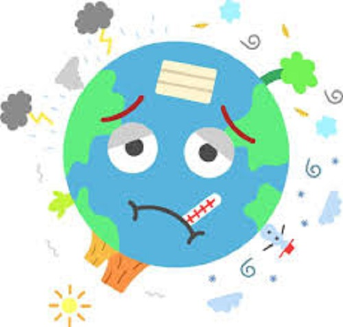

Conceptos Básicos. ¿Cuál es la diferencia entre "efecto invernadero", "calentamiento global" y "cambio climático"? Aunque suelen usarse como sinónimos, sus significados son distintos y complementarios: • Efecto invernadero: Es un proceso natural en el que la atmósfera retiene parte del calor del Sol, permitiendo la vida en la Tierra. El problema actual es que los humanos lo hemos intensificado artificialmente. • Calentamiento global: Es el aumento a largo plazo de la temperatura media del planeta debido a la acumulación de esos gases de efecto invernadero. • Cambio climático: Es el concepto más amplio. Incluye el calentamiento global y todas sus consecuencias derivadas, como el aumento del nivel del mar, el derretimiento de glaciares y los eventos climáticos extremos. ¿Por qué estamos seguros de que el cambio climático es causado por los humanos? El consenso entre la comunidad científica internacional es superior al 99%. Las mediciones demuestran que desde la Revolución Industrial, la concentración de dióxido de carbono ($CO_2$) en la atmósfera ha aumentado a un ritmo nunca antes visto en la historia geológica, coincidiendo exactamente con la quema masiva de combustibles fósiles (carbón, petróleo y gas) y la deforestación. Impactos y Consecuencias ¿Por qué importa que la temperatura suba $1.5^\circ\text{C}$ o $2^\circ\text{C}$? Parece muy poco. Para el cuerpo humano es poco, pero para el sistema climático de la Tierra es masivo. Un aumento global promedio de $1.5^\circ\text{C}$ desestabiliza por completo los ecosistemas. Superar este límite significa pasar de sequías e inundaciones moderadas a la pérdida total de arrecifes de coral, escasez crítica de agua potable, olas de calor mortales y el desplazamiento forzado de millones de personas por la subida del mar. ¿El cambio climático causa inviernos más fríos o tormentas de nieve? Sí. El cambio climático no significa que el frío desaparezca, sino que los patrones meteorológicos se vuelven extremos e inestables. El calentamiento del Ártico altera las corrientes de aire (como el vórtice polar), lo que puede empujar ráfagas de frío extremo hacia zonas que normalmente no las experimentan, provocando tormentas invernales históricas. Soluciones y Acción ¿Estamos a tiempo de detener el cambio climático? No podemos revertir los daños ya causados, pero sí estamos a tiempo de evitar las peores consecuencias. Cada fracción de grado que logremos evitar cuenta. Para estabilizar el clima, la ciencia indica que el mundo debe reducir drásticamente las emisiones de gases de efecto invernadero y alcanzar las cero emisiones netas para el año 2050. ¿Qué puedo hacer yo como individuo si el problema es de las grandes industrias? Aunque los gobiernos y las corporaciones tienen la mayor responsabilidad, las acciones individuales generan un impacto cultural y económico real. Puedes contribuir mediante: • El consumo consciente: Reducir el desperdicio de comida y moderar el consumo de carne. • La eficiencia energética: Apagar dispositivos que no uses, usar iluminación LED y optar por transporte público, bicicleta o caminar. • La presión social: Hablar del tema con tu entorno y exigir políticas ambientales activas a tus representantes locales. La crisis climática es el mayor desafío de nuestra generación. Mantenerse informado con datos reales es el primer paso para formar parte de la solución.
